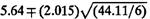
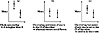
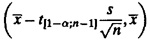
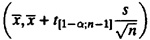
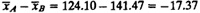
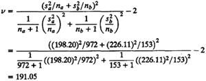

){kind=link}
){kind=link}
- t-value at five degrees of freedom and 90% confidence = 2.015
- 90% confidence interval for mean of A = 5.31

=(0.24,10.38)- 90% confidence interval for mean of B = 5.64 
=(0.18,11.10) - 90% confidence interval for mean of A = 5.31
| Previous | Table of Contents | Next |
A simpler visual test to compare two unpaired samples is to simply compute the confidence interval for each alternative separately as follows.
There are three possibilities as shown graphically in Figure 13.4:

FIGURE 13.4 Comparing two alternatives.
=(0.24,10.38)
=(0.18,11.10)
The two confidence intervals overlap and the mean of one falls in the confidence interval for the other. Therefore, the two systems are not different at this level of confidence.
Throughout this book, we use confidence levels of 90 or 95%. This should not lead one to believe that the confidence levels should always be that high. The choice of the confidence level is based on the loss one would sustain if the parameter is outside the range and the gain one would have if the parameter is inside the range. If the loss is high compared to the gain, the confidence levels should be high. If the loss is negligible compared to the gain, a lower confidence level is fine.
Consider, for example, a lottery in which a ticket costs one dollar but pays five million dollars to the winner. Suppose the probability of winning is 10-7 or one in ten million. To win the lottery with 90% confidence would require one to buy nine million tickets. It is clear that no one would be willing to spend that much for winning just five million. For most people, a very low confidence such as 0.01% would be fine in this case.
The system design decisions that computer systems performance analysts and designers face are not very different from those of the lottery. Although the loss (if the decision turns out wrong) and the gain (if the decision turns out correct) are not as widely different as in the case of the lottery, the risk level is decided essentially in the same manner.
The point is that if you come across a parameter that is significant only at 50% confidence level, do not automatically assume that the confidence is low and it is not worth making a decision based on that parameter. Similarly, even if a parameter is significant at 99% confidence level, it is possible for the decision makers to say that the confidence level is not high enough if the loss due to wrong decision is enormous.
Most books on statistics have a chapter devoted to hypothesis testing. Here, we prefer an alternate method of doing the same thing. This alternate method makes use of confidence intervals and helps us to easily solve a few commonly encountered cases of hypothesis testing. Testing for zero mean is the first example in this book of a problem that can be solved by a hypothesis test as well as by a confidence interval. In practice, a confidence interval is preferable because it provides more information. A hypothesis test is usually a yes-no decision. We either reject a hypothesis or accept it. A confidence interval not only gives that answer, it also provides information about the possible range of values for the parameter. A narrow confidence interval indicates that the parameter has been estimated with a high degree of precision. A wide confidence interval, on the other hand, indicates that the precision is not high. Knowing the precision is often more helpful to decision makers than the simple yes-no answer from the hypothesis tests. For example, if the difference A - B in the mean performance of two systems has a confidence interval for (-100, 100), we can say that there is no difference between the systems since the interval includes a zero. On the other hand, if the interval was (-1, 1), the conclusion is still “no difference” but we can now say it more loudly. Thus, confidence intervals tell us not only what to say but also how loudly to say it.
Confidence intervals are in general easier to understand and explain to decision makers than hypothesis tests. This is because the width of the interval is in the same units of measurements as the parameter being estimated. The decision makers find it easier to grasp. For example, it is more useful to know that a parameter is in the range, for instance, 100 to 200, than to know that the probability of the parameter being 110 is less than 3%.
In all the tests so far, two-sided confidence intervals have been used. For such intervals, if the confidence level is 100(1-α)%, there is a 100α/2% chance that the difference will be more than the upper confidence limit. Similarly, there is a 100α/2% chance that the difference will be less than the lower confidence limit. For example, with a 90% two-sided confidence interval, there is a 5% chance that the difference will be less than the lower confidence limit. Similarly, there is a 5% chance that the difference will be more than the upper confidence limit.
Sometimes only one-sided comparison is desired. For example, you may want to test the hypothesis that the mean is greater than a certain value. In this case, a one-sided lower confidence interval for α is desired and it is given by

Notice that the t-value is read at 1 - α confidence rather than at 1 - α/2. Similarly, the one-sided upper confidence interval for the population mean is given by

For large samples, z-values are used instead of t-values.

The standard deviation of the difference is

The effective number of degrees of freedom is

| TABLE 13.1 Time between System Crashes | |||
|---|---|---|---|
| System | Number | Mean | Standard deviation |
| A | 972 | 124.10 | 198.20 |
| B | 153 | 141.47 | 226.11 |
Since the degrees of freedom are more than 30, we use the unit normal quantiles instead of t quantiles. Also, since this is a one-sided test, we use z0.90 = 1.28 for a 90% confidence interval, which is
(-17.37, -17.37 + 1.28 x 19.35) = (-17.37, 7.402)
Since the confidence interval includes zero, we reject the hypothesis that System A is more susceptible to crashes than System B.
| Previous | Table of Contents | Next |